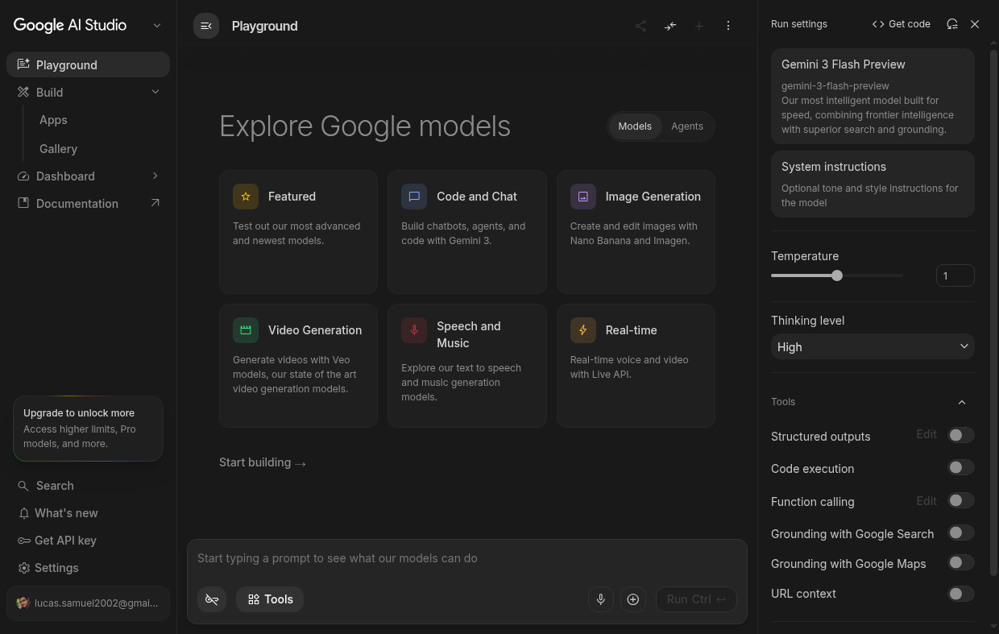
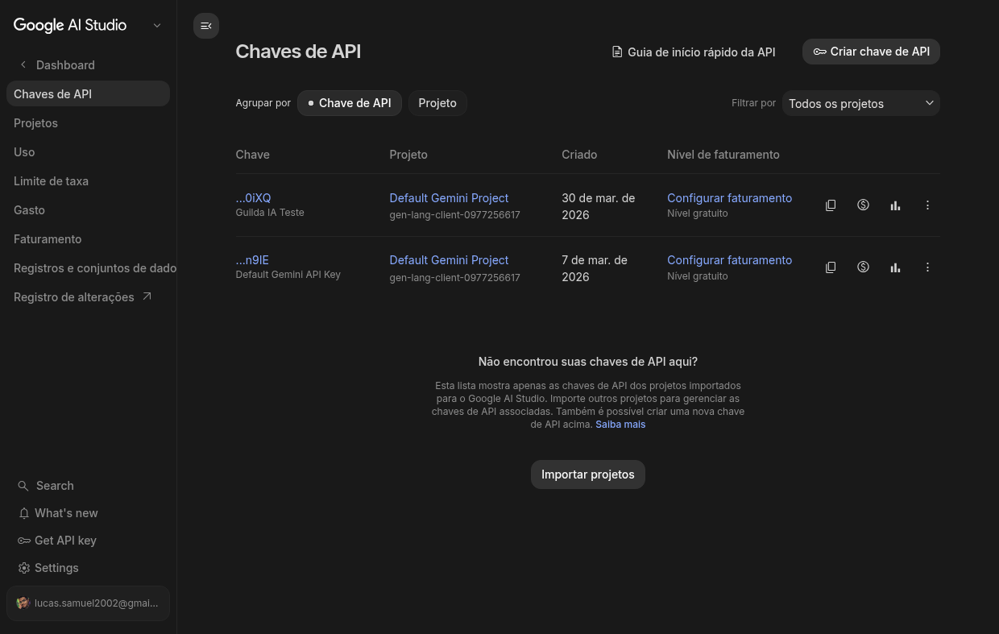
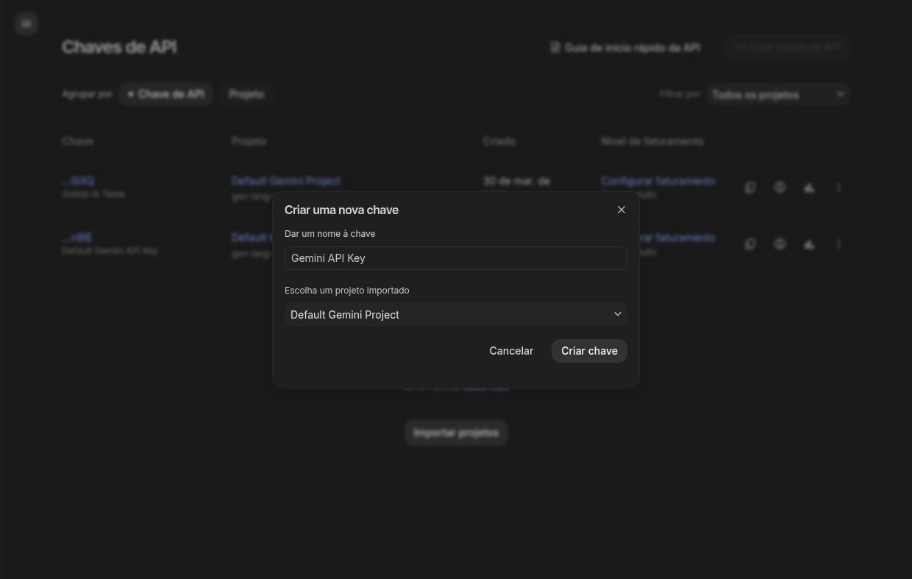
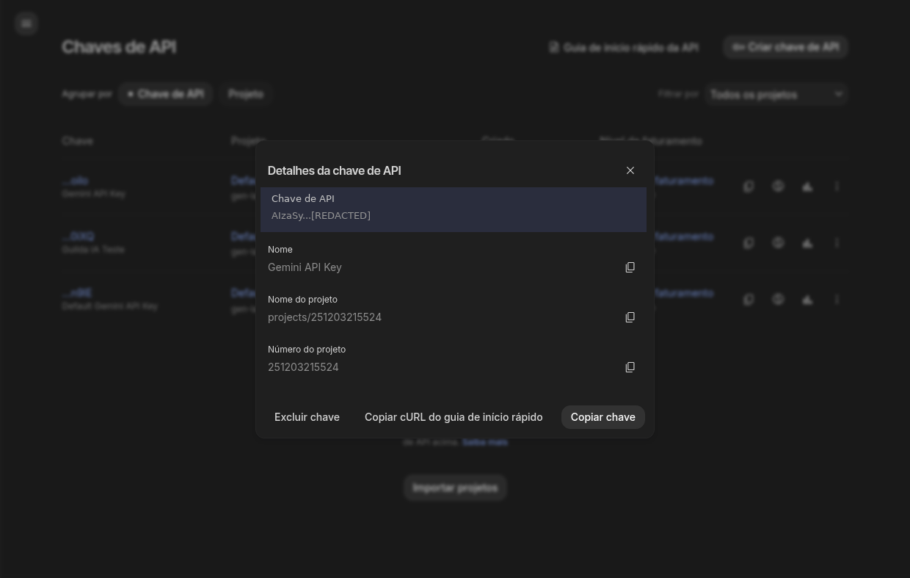

Continuação: Python e APIs
Na semana passada (Python Mínimo), aprendemos os fundamentos de Python: variáveis, listas, dicionários, funções e tratamento de erros. Também vimos conceitos de API e arquitetura cliente-servidor.
Agora vamos colocar a mão na massa: conectar nosso código Python a modelos de linguagem reais usando APIs.
Preparação e Setup
Antes de escrever qualquer código, precisamos preparar o ambiente. O conceito-chave desta aula é:
Toda API de LLM funciona com o mesmo padrão: você manda um JSON via HTTP e recebe um JSON de volta. Muda a URL, muda o formato, mas o conceito é universal. Entender HTTP = entender todas as APIs de LLM.
O que você precisa ter
| Item | Cloud (Gemini) | Local (Ollama) |
|---|---|---|
| Conta Google | ✅ Obrigatório | ❌ Não precisa |
| GPU | ❌ Não precisa | ✅ Recomendado (T4 ou superior) |
| Internet | ✅ Sempre | ⚠️ Só pra baixar o modelo |
| API key | ✅ Sim (grátis) | ❌ Não precisa |
| Python 3.10+ | ✅ Sim | ✅ Sim |
Biblioteca requests |
✅ Sim | ✅ Sim |
Recomendação: Comece pelo Gemini (setup rápido, sem GPU). Depois experimente o Ollama no Colab para entender como funciona localmente.
Conta Google e API key do Gemini

Figura 1: Google AI Studio — Playground principal
- Acesse o Google AI Studio: https://aistudio.google.com
- Faça login com sua conta Google
- No menu lateral, clique em "Get API Key"

Figura 2: Página de gerenciamento de chaves de API
- Clique em "Criar chave de API"

Figura 3: Dialog para criar uma nova chave
- Escolha um projeto do Google Cloud (ou crie um novo)
- Copie a chave e guarde bem!

Figura 4: Chave criada — copie e armazene em local seguro!
⚠️ API key é SECRETA. Nunca compartilhe, nunca publique no GitHub, nunca cole em chat público.
Google Colab
O Colab é um ambiente Python gratuito no navegador que vamos usar durante a aula.
- Acesse: https://colab.research.google.com
- Crie um novo notebook (
Arquivo → Novo notebook) - Para usar GPU:
Runtime → Change runtime type → T4 GPU(necessário para Ollama) - Para guardar a API key com segurança: use o Secrets do Colab (
🔑 ícone na barra lateral)
Onde guardar a API key no Colab: No painel lateral, clique no ícone 🔑 (Secrets). Adicione uma chave chamada
GEMINI_API_KEYcom o valor da sua API key. Nunca escreva a chave diretamente no código!
Instalando dependências
No Colab ou local, você vai precisar de:
# Cloud (Gemini) — SDK oficial do Google pip install google-genai # Local (Ollama) — apenas requests, que já vem com Python pip install requests
No Colab: Use
!pip install(com exclamação) no início da célula. Locally, use o terminal normalmente.
Outras opções (referência)
Além de Gemini e Ollama, existem outros provedores que usam o mesmo padrão HTTP:
| Provedor | Gratuito? | API key | Observação |
|---|---|---|---|
| HuggingFace | Rate limit | Sim (HF Token) | Vários modelos, bom para experimentar |
| OpenRouter | Crédito inicial | Sim | Agregador de modelos, tem modelos :free |
| Nous Portal | Rate limit | Sim | Acesso a modelos da Nous Research |
| OpenCode Go | — | Sim | CLI/SDK para múltiplos provedores |
| OpenAI | ❌ Pago | Sim | Referência de mercado, custo por uso |
| LM Studio | Ilimitado | Não (local) | Interface gráfica, mesma API do Ollama |
Esses provedores são opções extras para quem quiser explorar depois. Na aula, vamos focar em Gemini (cloud) e Ollama (local).
Opção 1: Google Gemini (Cloud)
Por que Gemini?
- 1 milhão de tokens/dia gratuito
- Funciona direto no Google Colab, sem GPU
- Modelos rápidos e capazes
- API key gratuita
Modelos disponíveis
| Modelo | Contexto | Uso | Gratuito? |
|---|---|---|---|
| gemini-2.5-flash-preview | 1M tokens | Rápido, custo-benefício | Sim (limitado) |
| gemini-2.0-flash | 1M tokens | Equilibrado, recomendado | Sim (limitado) |
| gemini-2.0-flash-lite | 1M tokens | Mais rápido, menor | Sim (limitado) |
| gemini-1.5-pro | 2M tokens | Complexo, contexto longo | Sim (limitado) |
| gemini-1.5-flash | 1M tokens | Rápido, multimodal | Sim (limitado) |
Limite gratuito: ~1 milhão de tokens/dia para muitos modelos. Verifique em ai.google.dev/pricing
Como escolher o modelo
- gemini-2.0-flash: Recomendado para maioria dos casos
- gemini-2.5-flash-preview: Mais recente, mais inteligente
- gemini-1.5-pro: Para contexto muito longo (documentos grandes)
Configuração no Colab
# Instalar SDK !pip install google-genai from google import genai from google.genai import types import os # Configurar API key (novo SDK: usar Client) from google.colab import userdata client = genai.Client(api_key=userdata.get('GEMINI_API_KEY'))
Chamada básica
# Mensagem simples (novo SDK) response = client.models.generate_content( model="gemini-2.0-flash", contents="Olá! Qual é a capital do Brasil?" ) print(response.text) # Com histórico de conversa (chat) chat = client.chats.create(model="gemini-2.0-flash") response1 = chat.send_message("Olá!") print(response1.text) response2 = chat.send_message("Qual é a capital do Brasil?") print(response2.text)
Estrutura da mensagem completa
# Com instruções de sistema (novo SDK) response = client.models.generate_content( model="gemini-2.0-flash", contents="O que é uma lista?", config=types.GenerateContentConfig( system_instruction="Você é um tutor de Python. Responda de forma didática." ) ) print(response.text)
Parâmetros importantes
# Novo SDK: usar types.GenerateContentConfig response = client.models.generate_content( model="gemini-2.0-flash", contents="Conte uma piada", config=types.GenerateContentConfig( temperature=0.7, # 0.0 (determinístico) a 2.0 (criativo) max_output_tokens=100, # Limite de tokens na resposta top_p=0.95, # Nucleus sampling top_k=40 # Top-k sampling ) ) print(response.text)
Tratamento de erros
from google.api_core.exceptions import NotFound, PermissionDenied, ResourceExhausted try: response = client.models.generate_content( model="gemini-2.0-flash", contents="Olá!" ) print(response.text) except PermissionDenied: print("❌ API key inválida ou sem permissão") except ResourceExhausted: print("⚠️ Limite de tokens excedido. Aguarde.") except NotFound: print("❌ Modelo não encontrado") except Exception as e: print(f"Erro: {e}")
Exemplo completo no Colab
# Instalar SDK !pip install google-genai from google import genai from google.genai import types from google.colab import userdata # Configurar (novo SDK) client = genai.Client(api_key=userdata.get('GEMINI_API_KEY')) # Criar chat chat = client.chats.create(model="gemini-2.0-flash") while True: pergunta = input("Você: ") if pergunta.lower() in ['sair', 'exit', 'quit']: break resposta = chat.send_message(pergunta) print(f"IA: {resposta.text}\n")
Opção 2: Ollama no Google Colab (Local)
Por que Ollama?
- Gratuito e ilimitado — sem API key, sem limite de tokens
- Privacidade — dados não saem da máquina
- API REST HTTP — usa
requests.post(), o mesmo padrão que qualquer API - OpenAI-compatible —
/v1/chat/completionsfunciona como a API da OpenAI
Ponto pedagógico: Tanto Gemini quanto Ollama usam o mesmo padrão HTTP (request/response). A URL muda, o JSON muda um pouco, mas o conceito é universal. Entender HTTP = entender todas as APIs de LLM.
O que é Ollama?
Ollama é um servidor que roda modelos de linguagem localmente. Na prática:
- Você instala o Ollama
- Baixa um modelo (
ollama pull gemma4:e2b) - O Ollama fica servindo na porta 11434
- Qualquer programa pode fazer
requests.post()para conversar com o modelo
Setup no Google Colab
Essas 3 células preparam o ambiente. Execute na ordem:
# Célula 1: Verificar GPU # Vá em Runtime → Change runtime type → T4 GPU !nvidia-smi
# Célula 2: Instalar Ollama + dependências !apt-get install -y zstd pciutils lshw > /dev/null 2>&1 !curl -fsSL https://ollama.com/install.sh | sh import os os.environ["LD_LIBRARY_PATH"] = "/usr/lib64-nvidia:" + os.environ.get("LD_LIBRARY_PATH", "") print("✅ Ollama instalado!")
# Célula 3: Iniciar servidor + baixar modelo import subprocess, time, requests subprocess.run(["pkill", "-f", "ollama"], capture_output=True) time.sleep(1) # Manter modelo carregado indefinidamente (sem isso, descarrega após 5 min) os.environ["OLLAMA_KEEP_ALIVE"] = "-1" subprocess.Popen( ["ollama", "serve"], stdout=subprocess.DEVNULL, stderr=subprocess.DEVNULL, env={**os.environ} ) print("⏳ Aguardando Ollama iniciar...") for i in range(30): try: r = requests.get("http://localhost:11434/api/tags", timeout=2) if r.status_code == 200: print("✅ Ollama rodando!") break except: time.sleep(1) # Baixar modelo (~7.2 GB para gemma4:e2b, ~2.7 GB para qwen3.5:4b) !ollama pull gemma4:e2b
⚠️ Warm up: A primeira inferência demora ~2-3 minutos (o modelo carrega na GPU). Depois disso, as respostas são rápidas (~70 tokens/s). Configuramos
OLLAMA_KEEP_ALIVE-1= para o modelo ficar na VRAM e não precisar recarregar.
Modelos recomendados (benchmarks na T4)
| Modelo | Download | VRAM | Warm up | Velocidade | Qualidade |
|---|---|---|---|---|---|
| qwen3.5:4b | ~2.7 GB | ~3 GB | 141s | ~80 tok/s | Boa |
| gemma4:e2b | ~7.2 GB | ~5-6 GB | 161s | ~70 tok/s | Boa (estável) |
| qwen3.5:9b | ~5.8 GB | ~7.7 GB | 153s | ~25 tok/s | Boa (maior) |
| gemma4:e4b | ~14 GB | ~9.4 GB | 199s | ~18 tok/s | Alta (lento) |
Nota sobre modelos: O
qwen3.5:4bé o mais rápido e leve — ideal para aula. Ogemma4:e2bé mais estável nas respostas. Modelos maiores (9B, E4B) cabem na T4 mas são significativamente mais lentos. Os tempos de warm up são reais, medidos em POC no Colab T4.
Chamada básica com requests.post()
Aqui está o coração da aula: usamos requests puro, sem SDK.
import requests import json OLLAMA_URL = "http://localhost:11434/api/chat" MODEL = "gemma4:e2b" def chat(messages, model=None, stream=False): """Envia mensagens pro Ollama e retorna a resposta. Args: messages: lista [{"role": "...", "content": "..."}] model: nome do modelo (padrão: gemma4:e2b) stream: se True, retorna response object para iterar Returns: dict com a resposta (ou response se stream=True) """ if model is None: model = MODEL payload = {"model": model, "messages": messages, "stream": stream, "keep_alive": -1} response = requests.post(OLLAMA_URL, json=payload, timeout=300) if response.status_code != 200: raise Exception(f"Erro {response.status_code}: {response.text}") return response if stream else response.json() # Teste resultado = chat([ {"role": "system", "content": "Você é um assistente útil. Responda em português."}, {"role": "user", "content": "Qual é a capital de Minas Gerais?"} ]) print(f"🤖 {resultado['message']['content']}") print(f"📊 Tokens: prompt={resultado.get('prompt_eval_count', '?')}, " f"completion={resultado.get('eval_count', '?')}")
Compare com o Gemini: A estrutura é quase idêntica — mandamos mensagens (system + user), recebemos uma resposta. A diferença é a URL e o formato do JSON. O conceito HTTP é o mesmo.
Chat com memória (multi-turno)
Cada chamada envia o histórico completo. O modelo mantém o contexto.
historico = [ {"role": "system", "content": "Você é um assistente útil. Responda em português. Seja conciso."} ] historico.append({"role": "user", "content": "Meu nome é Lucas e eu ense IA."}) r1 = chat(historico) historico.append({"role": "assistant", "content": r1["message"]["content"]}) print(f"🤖: {r1['message']['content']}") historico.append({"role": "user", "content": "Qual é o meu nome?"}) r2 = chat(historico) historico.append({"role": "assistant", "content": r2["message"]["content"]}) print(f"🤖: {r2['message']['content']}")
Modo Thinking (raciocínio interno)
O Gemma 4 suporta thinking mode — o modelo raciocina antes de responder.
resultado = chat([ {"role": "system", "content": "Você é um assistente útil. Responda em português."}, {"role": "user", "content": "Quantos números primos existem entre 1 e 20? /think"} ]) msg = resultado["message"] thinking = msg.get("thinking", "(sem thinking)") content = msg.get("content", "") print(f"💭 Thinking:\n{thinking[:500]}...") print(f"\n🤖 Resposta: {content}")
Streaming (resposta em tempo real)
print("🤖 ", end="") response = chat( [ {"role": "system", "content": "Você é um assistente útil. Responda em português."}, {"role": "user", "content": "Explique o que é uma API em 3 frases."} ], stream=True ) for line in response.iter_lines(): if line: chunk = json.loads(line) if "message" in chunk and "content" in chunk["message"]: print(chunk["message"]["content"], end="", flush=True) print()
API Compatível com OpenAI
O Ollama também tem um endpoint compatível com a OpenAI em /v1/chat/completions.
Isso significa que qualquer código que usa a OpenAI SDK pode apontar pro Ollama local trocando só a base_url.
OPENAI_URL = "http://localhost:11434/v1/chat/completions" payload = { "model": "gemma4:e2b", "messages": [ {"role": "system", "content": "Você é um assistente útil. Responda em português."}, {"role": "user", "content": "O que é Python em uma frase?"} ], "temperature": 0.7, "max_tokens": 64, "keep_alive": -1 } response = requests.post(OPENAI_URL, json=payload, timeout=300) data = response.json() print(f"🤖 {data['choices'][0]['message']['content']}") print(f"📊 Model: {data['model']}, Usage: {data['usage']}")
Ponto-chave: O formato é idêntico ao da OpenAI. A única diferença é a URL (
localhostem vez deapi.openai.com) e o modelo (gemma4:e2bem vez degpt-4o). Isso é poderoso: o mesmo código funciona com qualquer provedor.
Nota: LM Studio
Se você prefere uma interface gráfica, o LM Studio é uma alternativa ao Ollama:
- Disponível em: https://lmstudio.ai
- Interface gráfica para baixar e rodar modelos
- Expõe a mesma API OpenAI-compatible em
localhost:1234 - Não precisa de terminal — tudo é clique e arraste
Para usar com requests, basta trocar a URL:
# LM Studio em vez de Ollama — só muda a URL! LMSTUDIO_URL = "http://localhost:1234/v1/chat/completions" # O resto é idêntico payload = { "model": "model-name-here", # nome do modelo carregado no LM Studio "messages": [{"role": "user", "content": "Olá!"}], "temperature": 0.7 } response = requests.post(LMSTUDIO_URL, json=payload, timeout=120)
Dica: No LM Studio, vá em Local Server → Start Server antes de rodar o código. Escolha o modelo desejado na interface. A API key pode ser qualquer string (ex:
"not-needed").
Comparação: Cloud vs Local
| Aspecto | Gemini (Cloud) | Ollama (Local) |
|---|---|---|
| Setup | API key (2 min) | Install + download (~5-7 min) |
| Warm up | Instantâneo | 141-199s (primeira req, depende do modelo) |
| Velocidade | ~100+ tok/s | 18-80 tok/s (depende do modelo) |
| Custos | Grátis com limites | 100% grátis |
| Privacidade | Dados vão pro Google | Fica na máquina |
| Qualidade | Muito alta | Boa a alta |
| Internet | Necessária | Não (após setup) |
| API key | Sim | Não |
Recomendação: Use Gemini para desenvolvimento (rápido, sem setup) e Ollama para demonstrar privacidade e independência de cloud. O padrão HTTP é o mesmo nos dois.
Tratamento de Erros
Erros são iguais com qualquer API — o padrão é try/except com requests.
import requests def chamar_api(url, payload, timeout=30, tentativas=3): """Faz request com retry automático.""" for tentativa in range(tentativas): try: response = requests.post(url, json=payload, timeout=timeout) response.raise_for_status() # Levanta exceção para erros HTTP return response.json() except requests.exceptions.ConnectionError: print(f"⚠️ Sem conexão. Tentativa {tentativa + 1}/{tentativas}...") time.sleep(2) except requests.exceptions.Timeout: print(f"⚠️ Timeout. Tentativa {tentativa + 1}/{tentativas}...") except requests.exceptions.HTTPError as e: if e.response.status_code == 401: raise Exception("❌ API key inválida") elif e.response.status_code == 429: print(f"⚠️ Rate limit. Aguardando...") time.sleep(5) else: raise Exception(f"❌ Erro HTTP {e.response.status_code}: {e.response.text}") raise Exception("❌ Número máximo de tentativas excedido")
Códigos de erro comuns
| Código | Significado | O que fazer |
|---|---|---|
| 401 | Não autorizado | Verificar API key |
| 429 | Rate limit | Aguardar e tentar novamente |
| 500 | Erro do servidor | Tentar novamente mais tarde |
| 503 | Serviço indisponível | Servidor sobrecarregado |
Parâmetros de Geração
| Valor | Comportamento | Uso |
|---|---|---|
| 0.0-0.3 | Muito determinístico | Código, fatos, análises |
| 0.4-0.7 | Equilibrado | Conversa geral |
| 0.8-1.0 | Criativo | Escrita criativa, brainstorming |
| 1.0+ | Muito criativo | Arte, experimentação |
Exercícios Práticos
Exercício 1: Duas APIs, um padrão
Crie uma função perguntar() que funciona com qualquer API — só mudando a URL:
def perguntar(mensagem, url, model, api_key=None, system="Você é um assistente útil."): """Faz uma pergunta a qualquer API de LLM usando requests.post(). Args: mensagem: pergunta do usuário url: URL da API (Gemini ou Ollama) model: nome do modelo api_key: API key (None para Ollama) system: instrução de sistema """ # Implemente aqui pass
📝 Gabarito
def perguntar(mensagem, url, model, api_key=None, system="Você é um assistente útil."): """Faz uma pergunta a qualquer API de LLM usando requests.post().""" headers = {"Content-Type": "application/json"} if api_key: headers["Authorization"] = f"Bearer {api_key}" payload = { "model": model, "messages": [ {"role": "system", "content": system}, {"role": "user", "content": mensagem} ], "temperature": 0.7, "keep_alive": -1 # Ollama: manter modelo carregado } response = requests.post(url, json=payload, headers=headers, timeout=120) response.raise_for_status() data = response.json() # Formato OpenAI/Ollama if "choices" in data: return data["choices"][0]["message"]["content"] # Formato Ollama nativo elif "message" in data: return data["message"]["content"] else: return str(data) # Uso com Ollama (local) resposta = perguntar( "Qual é a capital de Minas Gerais?", url="http://localhost:11434/v1/chat/completions", model="gemma4:e2b" ) print(f"Ollama: {resposta}") # Uso com Gemini (cloud) — via OpenAI-compatible endpoint # Nota: Gemini não tem endpoint OpenAI-compatible direto, # mas o padrão é o mesmo!
Exercício 2: Chat com memória
Implemente um chat com histórico usando dicionários (sem classes!):
historico = {"mensagens": [{"role": "system", "content": "Você é um assistente útil. Responda em português."}]} def conversar(mensagem): """Adiciona mensagem ao histórico, chama a API, retorna resposta.""" # Implemente pass def ver_historico(): """Retorna histórico sem o system prompt.""" # Implemente pass def limpar_historico(): """Limpa histórico mantendo system prompt.""" # Implemente pass
📝 Gabarito
historico = {"mensagens": [{"role": "system", "content": "Você é um assistente útil. Responda em português."}]} def conversar(mensagem): """Adiciona mensagem ao histórico, chama a API, retorna resposta.""" historico["mensagens"].append({"role": "user", "content": mensagem}) resultado = chat(historico) resposta = resultado["message"]["content"] historico["mensagens"].append({"role": "assistant", "content": resposta}) return resposta def ver_historico(): """Retorna histórico sem o system prompt.""" return historico["mensagens"][1:] def limpar_historico(): """Limpa histórico mantendo system prompt.""" sistema = historico["mensagens"][0] historico["mensagens"] = [sistema] # Uso print(conversar("Meu nome é Lucas e eu ensino IA.")) print(conversar("Qual é o meu nome?")) # Deve lembrar! print(ver_historico())
Exercício 3: Trocar de provedor
Modifique o Exercício 1 para aceitar tanto Ollama quanto Gemini. Dica: use um parâmetro provedor com valores "ollama" ou "gemini".
Exercício 4: Tratamento de erros
Adicione try/except ao Exercício 2 para tratar:
- API key inválida (401)
- Rate limit (429)
- Servidor offline (ConnectionError)
Para ir mais longe
- HuggingFace: Gratuito com rate limit, vários modelos. Acesso: https://huggingface.co
- OpenRouter: Agregador de modelos, crédito inicial gratuito. Acesso: https://openrouter.ai
- OpenAI: Pago, mas referência de mercado. Documentação: https://platform.openai.com/docs
- LangChain: Framework que abstrai diferenças entre provedores — veremos na Semana 06!
Dica: Comece com Gemini (gratuito e sem setup) ou Ollama no Colab (gratuito e sem API key). Depois explore outros provedores na Semana 06 quando falarmos de LangChain.